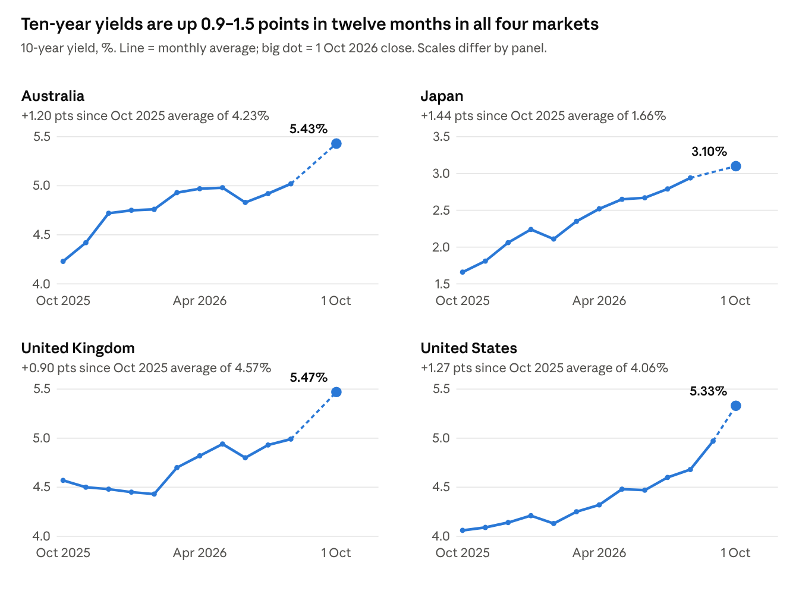

Global bond sell-off: what's happening
Ten-year yields in the US, UK, Japan and Australia are at or near multi-decade highs. Central banks, an energy shock and heavy government borrowing are all pushing the same way.
Global government bonds came under further pressure on Thursday, 1 October, as yields in Japan and Australia pushed towards multi-decade highs.
The numbers are stark. The US 10-year Treasury yield rose about 47 basis points in September to roughly 5.24%, its highest since June 2007. Japan's 10-year yield crossed 3% for the first time since 1996 and reached 3.115%, its highest since August 1996. Australia's 10-year closed September at 5.38%, a level last seen in 2011. In Britain the 10-year gilt hit about 5.38%, and the 30-year touched 5.89%, its highest since 1998.
The sell-off in brief
- US 10-year: about 5.24%, highest since June 2007
- Japan 10-year: 3.115%, highest since August 1996
- Australia 10-year: 5.38% at the end of September, last seen in 2011
- UK 10-year gilt: about 5.38%; 30-year at 5.89%, highest since 1998
- German and French 10-year yields at 17- and 18-year highs
This is no longer one country's problem. German and French 10-year yields have reached 17- and 18-year highs too. When bond markets in Tokyo, Sydney, London, Frankfurt and New York all sell off together, the causes are usually global.
Why prices fall when yields rise
When investors sell bonds faster than others want to buy them, prices fall and yields rise. The two always move in opposite directions.
A government bond pays a fixed coupon. Suppose a 10-year bond is issued at a price of 100 with a 4% coupon, paying 4 a year. If sellers push its price down to 95, a new buyer still receives 4 a year but pays only 95 for it. Their effective return — the yield — rises to roughly 4.6% once the gain back to 100 at maturity is counted.
So a "sell-off" and "rising yields" are the same thing. Rising yields matter well beyond bond desks: they set the floor for mortgage rates, corporate borrowing costs and the interest governments pay on their debt.
Twelve months of rising yields

Japan has moved the most: its 10-year yield has almost doubled in a year as the Bank of Japan finishes decades of ultra-low rates. The US move accelerated sharply in September, the month of the Fed's first hike in three years. Australia and the UK climbed more steadily, then broke out above 5.3% as the global sell-off spread. In every market, yields on 1 October sit at or near the top of their twelve-month range.
Why investors are selling
| Driver | What is happening | Where it bites hardest |
|---|---|---|
| Central banks raising rates | The Fed hiked 25bp to 3.75–4.00% on 16 September, its first hike in more than three years, and signalled another this year. The RBA lifted its cash rate to 4.60%, its fourth hike of 2026. The BoJ is at 1.25%; the BoE held at 3.75% but markets see about an 80% chance of a November hike. | All four, Australia and the US most directly |
| An energy-driven inflation shock | Since the US-Israeli conflict with Iran began in late February, WTI crude rose from about $57 to a $113 peak in April and was back above $100 in mid-September. US core PCE inflation climbed from 3.0% to 3.3%; Australian CPI hit 4.0%; UK CPI is 3.1%. | Energy importers: Japan, UK, Europe |
| Heavy government borrowing | US federal debt has passed $40 trillion, and most G7 debt-to-GDP ratios sit at or above 100%. Japan's bonds have been under pressure since PM Sanae Takaichi's spending plans. In Britain, higher yields have roughly halved the Chancellor's fiscal headroom, from £26bn to about £13.8bn, before the 28 October budget. | US, UK, Japan |
| A flood of competing bonds | Global corporate bond issuance hit a record $4.9 trillion so far in 2026, including about $220bn from five large AI companies funding data centres. More supply of all bonds means each must be priced more cheaply to find buyers. | US dollar markets especially |
| Stronger-than-expected growth | US GDP is growing at 2.2% annualised. Japan's manufacturing sentiment is at its best in more than eight years. Strong growth reduces the need for central banks to cut base rates. | US, Japan, Australia |
| Fewer big, price-insensitive buyers | Central banks are no longer the dominant buyers they were after 2020: the Fed's balance sheet is about $6.6 trillion, down from roughly $9 trillion in 2022, and the BoJ is stepping back from the JGB market. Private investors who replace them demand a higher return. | Japan, US |
The markets are also feeding off each other. Japan's 10-year yield crossing 3% forced investors to reprice gilts and Treasuries, because Japanese savers — among the largest foreign holders of global bonds — can now earn more at home (Options Trading Report). Figures above are from U.S. Bank, Euronext/Reuters and Trading Economics.
What it means, and what to watch
Higher bond yields raise borrowing costs across the economy. Mortgage rates, business loans and government interest bills all key off them. In Australia the 10-year's climb has fed straight into fixed mortgage pricing; in Britain it has already eaten half the Chancellor's room for manoeuvre before the budget.
For investors there is an upside: new money can now lock in yields of 5% or more in the US, UK and Australia, and over 3% in Japan, levels not available for 15 to 30 years. The risk is that yields keep rising and prices keep falling first.
The next tests come quickly
- 28 October — the UK Autumn Budget, a direct test of gilt-market confidence.
- 27–28 October — the Fed's next meeting, where one more hike is the median forecast.
- Early November — Bank of England and RBA decisions; markets put the odds of a BoE hike near 80%.
- Oil prices and the Iran conflict — any easing in energy would take pressure off inflation, and off bonds, fastest.
Sources
- BigGo Finance: Global bonds head for worst month in years
- Euronext/Reuters: What's behind the selloff in world bond markets
- U.S. Bank: Fed raises rates to 3.75%–4.00%
- Options Trading Report: UK gilts near 6%
- Trading Economics 10-year yield pages: US, UK, Japan, Australia
- FRED monthly 10-year yields: US DGS10, Japan, UK, Australia
Yields are as reported by the sources above, up to the close on 1 October 2026.
This article is for information only and is not investment advice. The author may hold positions in companies mentioned.